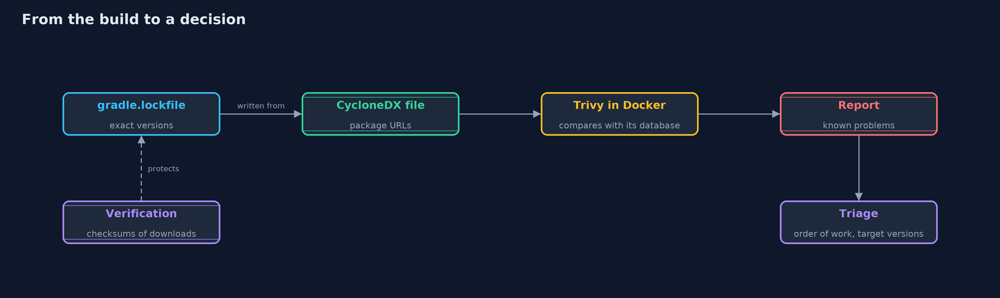
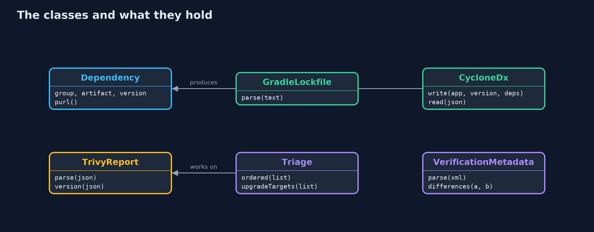
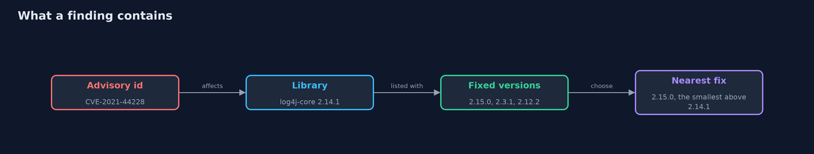
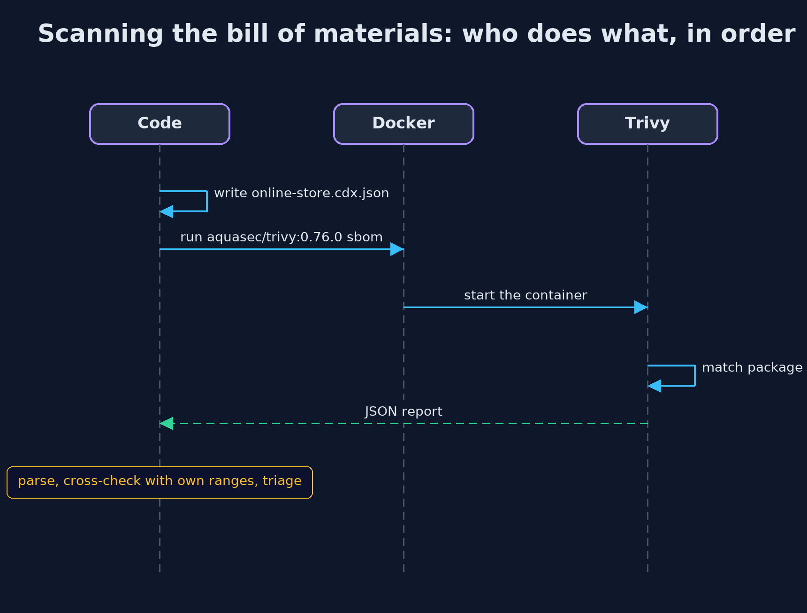

Patching and Dependency Hygiene with Trivy and Gradle
src/main/java/com/jk/explore/security/patchingtrivy/
├── CycloneDx.java Writes and checks a software bill of materials in the CycloneDX 1.6 JSON format, which scanners such as Trivy read
├── Dependency.java One Maven library: group, artifact and exact version
├── GradleLockfile.java Reads a Gradle dependency lock file (gradle.lockfile): one `group:artifact:version=configurations` line per resolved library
├── Json.java A small JSON reader for objects, arrays, strings, numbers, booleans and null: enough for the demo's inventory and advisory files
├── OwnAdvisory.java A problem the team knows about itself, with the versions it affects: from (included) up to until (not included)
├── PatchingTrivyDemo.java Runs the online store story in five numbered acts and prints exact, repeatable results
├── Triage.java Turns a scanner report into a decision: how many of each severity, what order to work in, and the version to move each library to
├── TrivyReport.java Reads the JSON that `trivy sbom --format json` and `trivy fs --format json` write: Results, each with a list of Vulnerabilities
├── VerificationMetadata.java Reads gradle/verification-metadata.xml: the SHA-256 that Gradle expects for every artifact it downloads
├── Version.java A Maven-style version: numbers separated by dots, optionally followed by a qualifier after a dash
└── Vulnerability.java One finding from a scanner report: which advisory, which library and version, which versions fix it, and how serious it is
A lock file pins what the build uses, a bill of materials lets a scanner such as Trivy find known problems in it, and Gradle's verification refuses a changed download, but a scanner only knows what is in its database today.
The plain version of this lesson worked out by hand which libraries a store ships, which of them have known problems and how bad they are. Real teams let tools do that. Four things work together here. A Gradle lock file records the exact version of every library the build used. A bill of materials (SBOM) in the standard CycloneDX format lists them in a form scanners understand. Trivy, an open-source scanner, compares that list with a database of known problems and writes a report. And Gradle's dependency verification compares the SHA-256 checksum of every download with a pinned value, and refuses to build when one differs.
The demo uses real libraries with real, famous problems, such as log4j-core 2.14.1 behind Log4Shell, and a report that the real Trivy wrote, saved in the project. The code reads the report, cross-checks it with its own range checks, and works out what to fix first and to which version.
The idea in everyday terms
Think of a shop that keeps a list of every ingredient in every product. The list is only useful if it is exact, so each ingredient has its brand and batch number. An inspector arrives with this morning's recall notices, goes down the list, and marks the products that contain a recalled batch. The inspector cannot know about a recall issued tomorrow, so the inspection is repeated. And when a delivery arrives, the label on the box is checked against the list before anything is used.
The scenario
An online store's build uses five libraries, among them log4j-core 2.14.1 and snakeyaml 1.26. The demo reads the lock file, writes the bill of materials, reads the report Trivy wrote for it, decides what to fix first and to which version, and checks the pinned checksums.
Run
./gradlew run
The demo tells the story in 5 acts, each printing exact numbers that the tests check:
| Act | What it shows |
|---|---|
| 1. Pinning exactly what the build uses | Gradle's lock file records the exact version of every library, five entries, one of which arrived as a dependency of another. |
| 2. A bill of materials a scanner can read | The code writes a CycloneDX 1.6 file of five libraries with package URLs, checks them against the lock file, and refuses a package URL that disagrees with its version. |
| 3. What the scanner reported | The real Trivy found 16 problems in 4 libraries, 3 critical, and the code's own range checks agree on Log4Shell and the Commons Text problem. |
| 4. What to fix first, and to which version | Critical problems come first, and one upgrade per library fixes everything that has a fix: log4j-core to 2.25.4 and snakeyaml to 2.0, which crosses a major version. |
| 5. Checking what is downloaded, and automating the updates | Gradle's verification file pins six checksums and the build refuses a changed one; Dependabot and Renovate configurations open the update pull requests. |
Test
./gradlew test
20 tests in DemoRunsTest, FormatsTest, ToolsIntegrationTest. The ordinary tests need only a JDK and read committed files, so they are identical on every run. The integration tests (tagged tools) run the real Trivy in Docker against the files the code writes, and a nested Gradle build that must refuse a changed checksum; they are skipped cleanly without Docker or the vulnerability database.
What the simulation got right, and what it left out
The demo reads files committed in fixtures/: the lock file, the bill of materials the code writes, a trimmed report from a real Trivy 0.76.0 run on 17 October 2026, and a Gradle verification file generated by Gradle. It needs no tool and no network. The integration tests run Trivy in Docker and a nested Gradle build; a different day's database will report different problems, so those tests check agreement and the disappearance of the original critical problems, not exact counts.
Technologies and versions
Every version below is pinned in the project's build files and was the latest stable release when the project was built.
| Technology | Version | Used for |
|---|---|---|
| Java | 25 | the language and runtime; a Gradle toolchain finds or downloads the JDK |
| Gradle | 9.8.1 (wrapper) | build and run; nothing to install, the wrapper downloads it |
| org.junit.jupiter:junit-jupiter | 6.1.3, set by junit-bom | JUnit 5: the tests (tests only) |
| org.junit.platform:junit-platform-launcher | 6.1.3, set by junit-bom | JUnit platform launcher, which Gradle needs to run the tests (tests only) |
| Trivy | 0.76.0 (Docker image aquasec/trivy:0.76.0) | the scanner that reads the bill of materials and the lock file; used by the integration tests |
| Docker | any recent version | runs Trivy without installing it |
| CycloneDX | 1.6 (JSON) | the standard format of the bill of materials |
| Gradle dependency locking and verification | Gradle 9.8.1 | gradle.lockfile pins versions; verification-metadata.xml pins SHA-256 checksums |
| videokit | repository tool (tools/videokit) |
the narrated video and animation: Piper en_US-amy-medium, speed 0.8, longer pauses (the amy-slow voice) |
Learning Material
| Document | What it is for |
|---|---|
| Dependencies | what the framework and infrastructure are, and why they are here |
| Problem statement | the situation and what the project must show |
| Prerequisites | what you need to know first |
| Patching and Dependency Hygiene with Trivy and Gradle, explained | the acts in prose |
| Session guide | a one-hour lesson with exercises |
| Animated walkthrough | the acts step by step, narrated |
| Threat model | what is protected, who could harm it, and how, using STRIDE |
| Spec | what this project must be true of |
| Expected output | the golden demo output every test and every port checks against |
The idea in one picture
The lock file feeds the bill of materials, which Trivy compares with its database; the triage turns the report into work.

Where each piece sits
Readers and writers for each file format, and Triage over the parsed report.

How the data moves
A report entry names the advisory, the library and version, and the versions that fix it.

Who calls whom, in order

Video
video/patching-and-dependency-hygiene-with-trivy-explained.mp4 (with .m4a audio and .srt subtitles) is built by video/build_video.sh. Rendered media is not committed.
What it costs
- A scanner knows only what its database knows. A clean report means no known problem on the day of the scan, so the scan must be repeated, ideally on every build and every day.
- The first run needs the network. Trivy downloads a database of about 130 MB, and then keeps it in a Docker volume.
- Lock files and checksums need reviewing. Every update changes them, so automate the update pull requests and keep each review small.
- Scanners report what is present, not what is reachable. A critical problem in a feature the store never uses still needs a plan, but not the same urgency.
- Fixes can cross major versions. Moving snakeyaml from 1.26 to 2.0 can break the build, so the tests must run after each move.
When this is too much
For a small project, a lock file and one scheduled scan are enough. The checksum verification, the signed artifacts and the automated pull requests pay off as the number of libraries and of people grows.
Where you have already met this
gradle.lockfileandpackage-lock.jsonfiles in repositories.- Dependabot and Renovate pull requests with titles such as "Bump log4j-core from 2.14.1 to 2.17.1".
- Security tabs and scan steps in CI pipelines, that run Trivy, Grype or Dependency-Check.
- SBOM requirements in government and customer contracts.
Where this sits
This project follows patching-and-dependency-hygiene and is the fifth in safe-habits. It does with tools what that project did by hand.